Summary: This section describes how to create a new document and configure it via the document configuration dialog. You may choose the device associated with the document and specify the input and output configurations via this dialog.
In AU Lab, every document you create is associated with an input and output audio device on your system. Input and output can use the same device, or a different device for each. When creating a document, you specify the input and output track configurations as well as specify the speaker layout using the Document Configuration dialog. To create a new document, choose New from the File menu.
NOTE: This dialog will only appear if the document preferences are set to “Show document configuration dialog”.
The Document Configuration Dialog provides facilities for specifying the configuration of a document. The dialog is separated into two panes. The left pane of the window has a list of configuration profiles that can be used as a starting point for the document. These configurations specify the number, arrangement, and composition of the input and output tracks. See Managing Configuration Profiles for information on how to add and remove configuration profiles.
The right pane of the window shows the input and output settings of the currently selected configuration profile. Input and output settings are in separate groups and allow the choice of device, source (if appropriate), and location and channel layout of each track on the selected device. See Choosing the Audio Device for more information on how to configure the device settings.
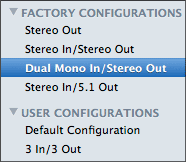The Document Configuration Dialog allows you to store commonly used profiles to speed document creation. Additionally, it provides a number of pre-made “factory” configurations for your convenience.
These premade configurations appear in a group labeled Factory Configurations. These configurations are not editable. When you create configurations, they are organized under the User Configurations group. Any user created configurations will be preserved across application launches of AU Lab.
To select a configuration to user for the a new document, choose the name of the configuration from this list. The settings panel on the right will show the track settings for the input and output of the selected configuration.
To create a new configuration, press the button at the bottom of the configuration profiles list. This will open the configuration editor sheet which allows you to specify the name of the configuration and specify the configuration of the inputs and outputs. See Configuring Outputs and Configuring Inputs for more information on how to configure the input and outputs settings.
To remove an existing user configuration, select the configuration to remove from the configuration list, and press the button at the bottom of the configuration profiles list. Note that factory configurations cannot be removed.
To edit an existing user configuration, select a configuration from the configuration list and either double-click on the name, or select Edit Configuration from the popup button. This will bring up the configuration editor. Make your changes, and click the OK button. Note that factory configurations cannot be edited.
As a shortcut, you can rename a configuration by selecting it in the configuration list and choosing Rename Configuration from the popup menu button. You can also duplicate existing configurations, as a basis for new ones.
Each configuration contains information about the inputs and outputs of a document. This profile is the basis of a document and must contain at least one output and may consist of one or more channels. An input is optional.
When creating a new profile, or editing an existing one, the configuration sheet is displayed with a visual representation of the configuration. This represention is organized into two tabs- one for input, and one for output.
When a new configuration is created, the default output configuration is a single stereo output track as shown by the image below:
You may add additional output channels by clicking on the Add Output button.
You can change the number of channels for a selected track by choosing the number of channels from the Output Channels popup menu. There are three choices- Mono (1 channel), Stereo (2 channel), or Multichannel (more than two channels). If you select Multichannel, you will be able to specify the number of channels and the layout of the speakers. See Specifying the Multichannel Configuration for additional information.
You can delete an existing track by clicking on the track in the configuration diagram, or select the track from the Selected Output popup menu and then click the Remove Output button. Note that you must always have at least one output track, so it is not possible to remove the last track in the output configuration.
The following image shows an output configuration with a 6 channel output track followed by a stereo output track. The stereo track is selected.
When a multichannel track is created, the Configuration Sheet expands, showing additional options for specifying the channel layout. Note that there can only be a single multichannel format per document. If multiple multichannel output tracks are created, they will all use the same number of channels.
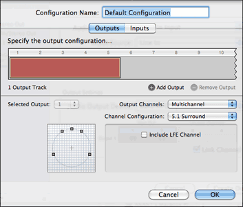
These new controls include a Channel Configuration popup menu for specifying the configuration type, as well as a graphic representation of the speaker layout and an area for additional customization based on the configuration type.
There are three supported configuration types in AU Lab:
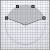 The constrained multichannel configuration type is a speaker layout consisting of 3 or more speakers arranged in an arc in front of the listener. Each speaker is spaced equally, and the first and last speaker define a spanning angle. After selecting this configuration from the Channel Configuration popup menu, the editor will display two additional text fields for editing the number of speakers and angle between the first and last speakers. There is a maximum of 8 speakers for this configuration.
The surround multichannel configuration type is a speaker layout using five or more satellite speakers and a subwoofer for low frequencies. This arrangement is typically used for home theater applications and includes common layouts such as 5.1, 6.1, and two 7.1 variations. There is a checkbox in the editor that allows the lfe channel to be removed if desired. In the below diagram, the listener is placed in the center of the listening circle and is indicated with a small crosshair.
| 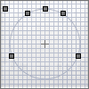 | 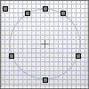 | 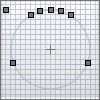 | 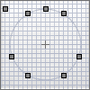 |
5.1 |
6.1 |
7.1 Front |
7.1 Rear |
The geometric multichannel configuration type is a speaker layout where the speakers are configured in an evenly spaced geometry around the listener. There are four different geometric types based on 4, 5, 6, and 8 speakers.
| 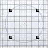 | 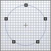 | 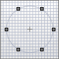 | 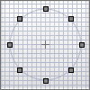 |
Quadraphonic |
Pentagonal |
Hexagonal |
Octagonal |
Click on the inputs tab at the top of the sheet to edit the input channel configuration. The Input section offers much less choice of channel selection since only mono and stereo tracks are supported.
You may use the Add Input and Remove Input buttons to add and remove inputs. Unlike outputs, a document is not required to have inputs.
Once you are satisfied with your input and output track configurations, click the OK button to create the configuration.
The choice of the audio device is independent of the configuration profile of a document. The audio device selection is organized into two groups, one for input and one for output.
You may use any audio device on your system such as your built-in audio hardware, an audio interface connected via firewire, a device connected via USB, or an aggregate device.
Note: The input and the output device do not need to be the same device.
To choose an audio device, select an input device name from the Audio Input Device popup menu and an output device name from the Audio Output Device popup menu. If your device supports changing the input source, you may select a source such as Internal Microphone or Line In using the Input Source popup button.
Input Settings
At the bottom of the Input Settings and Output Settings groups is a view that shows the location of each track in the profile. This view shows a visual representation of the numbers of channels available for the selected device. A stereo device such as the built-in audio has only two available channels, while a multichannel firewire device may have several channels grouped into discrete streams. For example, the image below shows an output device that has ten (10) output channels all grouped as a single stream.
To change the channel assignments of a particular track, simply select the track to be moved, and drag it to a new location. For example, the image below shows an input track being moved from channels 1-2 on the device to channels 3-4:
In addition to changing channel assignments in a group, output channel assignments can be made on an individual basis. This is useful, for example, if you need to reorder your channel assignments on a multichannel device. To do this, uncheck the Link Channel Groups button.
Note: Once channels have been unlinked, they can be moved individually:
Take care to ensure that none of the channel assignments overlap on the output section. Each individual channel has a label that indicates which speaker the output corresponds to. These are abbreviated as follows:
| L | Left |
| R | Right |
| C | Center |
| Ls | Left Surround |
| Rs | Right Surround |
| Lrs | Left Rear Surround |
| Rrs | Right Rear Surround |
| Lc | Left Center |
| Rc | Right Center |
| LFE | Low Frequency Effects |
NOTE: Default channel assignments for multichannel tracks are based on the device’s preferred channel layout. An Application such as Audio MIDI Setup may be used to specify this default layout.
A document may have more output channels than supported by the device it is running on. For example, if you have selected Built-in audio for the source of your document, you may have a maximum of two output channels in use. Once these channels are used, any additional channel groups you create will be marked as Unused Channels. These channel groups will be created, but cannot be routed to a device channel.
If you were to change the source to a device that supports more than two output channels, you would then be able to move the group to a specific channel assignment on the multichannel device. To do this, drag the group from the unused channel section to the channels of the device that you want to use. Note that overlapping output channels are not allowed.
| 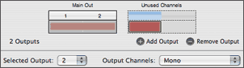 | 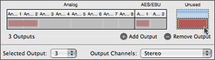 |
|
Unused channels on built-in audio |
Unused channels on a multichannel device |
This feature can be very useful because it allows the configuration of a document that has more output channels than the output device. At a later time, the document can be reconfigured on a multichannel device. The channel assignments will be preserved as the document is switched between devices.
Once you have completed configuration of the document, click the OK button to dismiss the configuration dialog and create the document. If at any time, you wish to make changes to the input or output track configurations, you select a different configuration, or edit the selected configuration.